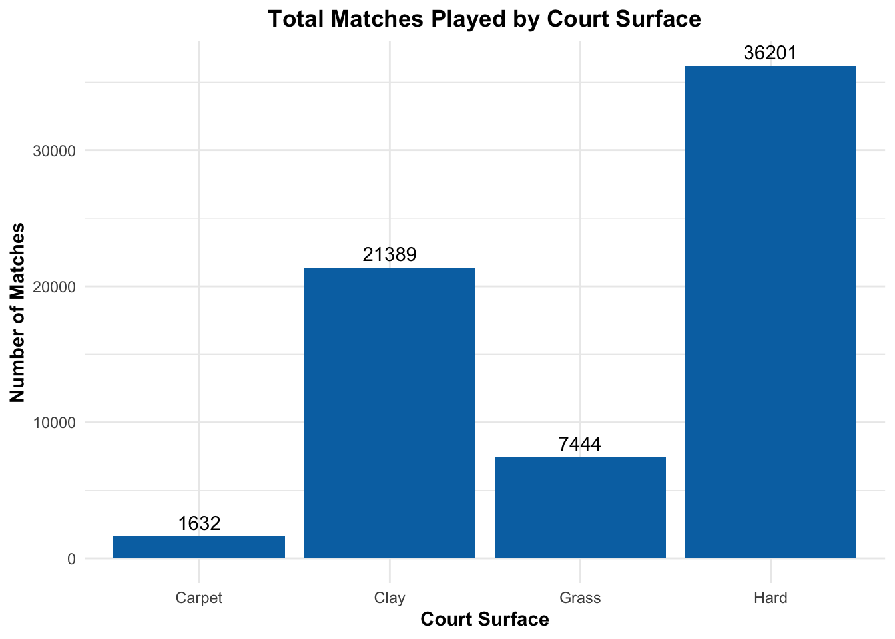
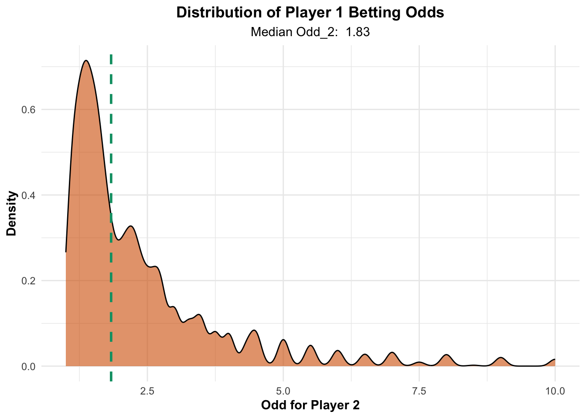
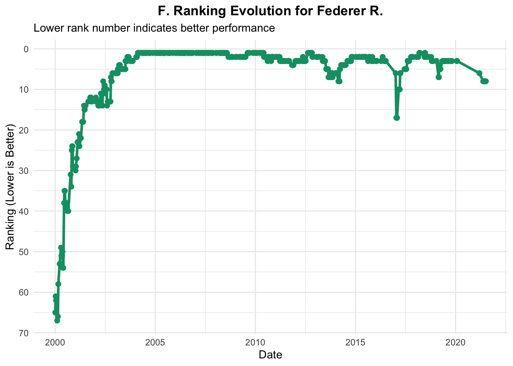
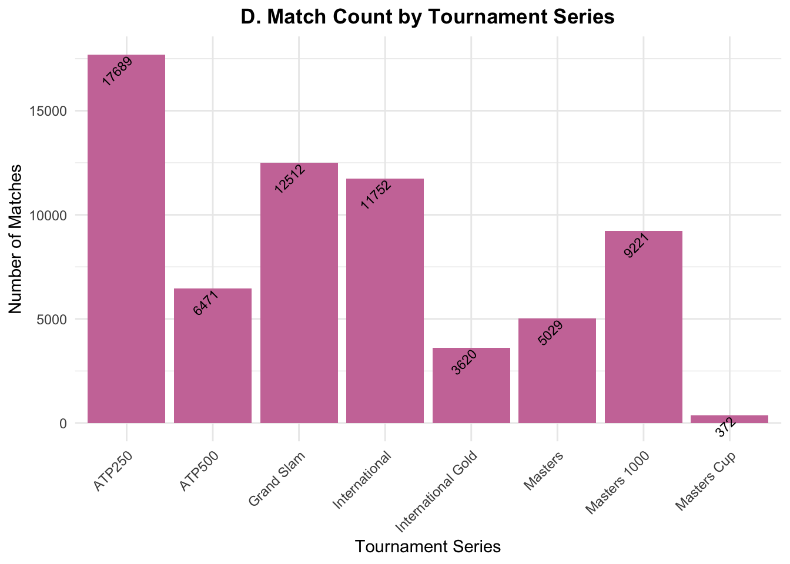
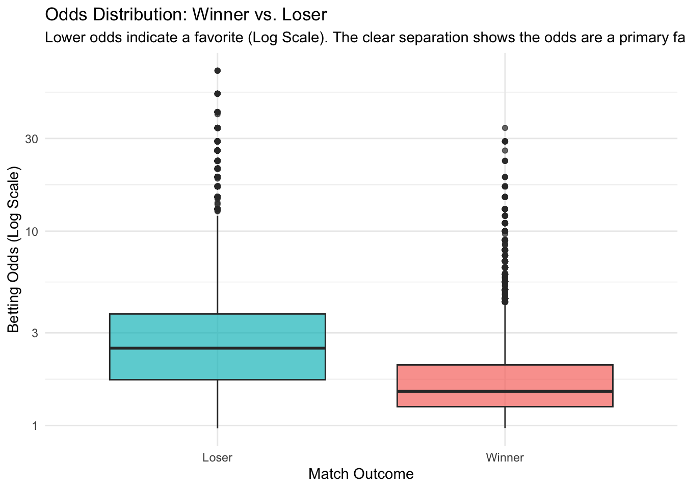
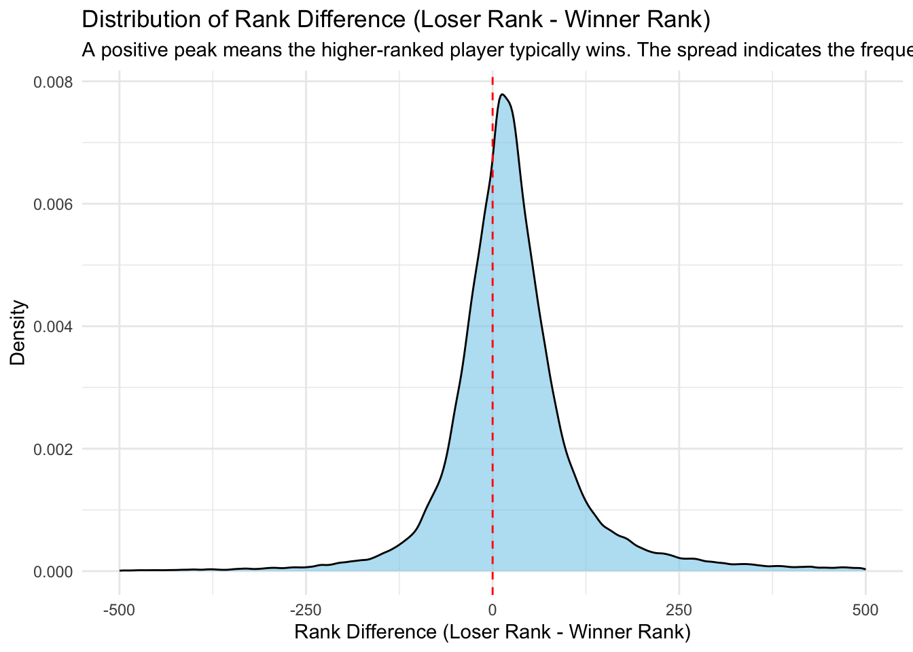
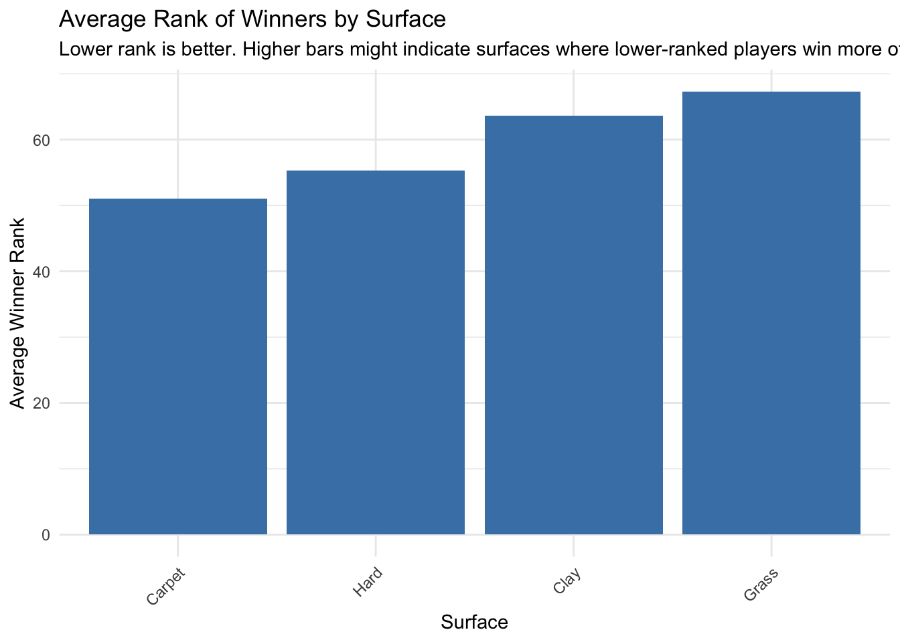

R Notebook
Code
# --- 2. Create the Bar Chart ---
surface_plot <- ggplot(atp_tennis, aes(x = Surface)) +
# Create the bars, map 'count' to the y-axis
geom_bar(fill = "#0072B2") +
# Add labels above the bars for clarity
geom_text(
stat = 'count',
aes(label = after_stat(count)),
vjust = -0.5
) +
# Set up labels and title
labs(
title = "Total Matches Played by Court Surface",
x = "Court Surface",
y = "Number of Matches"
) +
# Improve the visual theme
theme_minimal() +
theme(
plot.title = element_text(hjust = 0.5, face = "bold"),
axis.title.x = element_text(face = "bold"),
axis.title.y = element_text(face = "bold")
)
# Print the plot
print(surface_plot)
Code
# Load the necessary library (already loaded above, but good practice)
# library(tidyverse)
# --- 1. Data Preparation (Filter out missing odds) ---
# Filter out matches where the odds are recorded as -1.0 (a common placeholder for missing data)
atp_tennis_filtered <- atp_tennis %>%
filter(Odd_2 > 0)
# --- 2. Create the Density Plot ---
odds_plot <- ggplot(atp_tennis_filtered, aes(x = Odd_2)) +
# Create the density curve
geom_density(fill = "#D55E00", alpha = 0.6) +
# Add a vertical line to show the median odd
geom_vline(
aes(xintercept = median(Odd_2)),
color = "#009E73",
linetype = "dashed",
linewidth = 1
) +
# Set up labels and title
labs(
title = "Distribution of Player 1 Betting Odds",
subtitle = paste("Median Odd_2: ", round(median(atp_tennis_filtered$Odd_2), 2)),
x = "Odd for Player 2",
y = "Density"
) +
# Set the x-axis limit to focus on typical betting odds (e.g., 1 to 10)
xlim(c(1, 10)) +
# Improve the visual theme
theme_minimal() +
theme(
plot.title = element_text(hjust = 0.5, face = "bold"),
plot.subtitle = element_text(hjust = 0.5),
axis.title.x = element_text(face = "bold"),
axis.title.y = element_text(face = "bold")
)
# Print the plot
print(odds_plot)
Code
# 1. Define the player you want to track
player_name <- "Federer R."
# NOTE: Replace "Federer R." with the name of the player you want to plot.
# 2. Extract matches where the player is Player_1
atp_tennis_p1 <- atp_tennis %>%
filter(Player_1 == player_name) %>%
select(Date, Rank = Rank_1)
# 3. Extract matches where the player is Player_2
atp_tennis_p2 <- atp_tennis %>%
filter(Player_2 == player_name) %>%
select(Date, Rank = Rank_2)
# 4. Combine the data frames and convert Date to a proper date type
atp_tennis_player_rank <- bind_rows(atp_tennis_p1, atp_tennis_p2) %>%
mutate(Date = as.Date(Date)) %>%
# Select the best rank for any given date (usually the one closest to the tournament start)
group_by(Date) %>%
summarise(Rank = min(Rank)) %>%
ungroup() %>%
# Sort by date for the time series plot
arrange(Date)
# 5. Create the Line Chart
rank_plot <- ggplot(atp_tennis_player_rank, aes(x = Date, y = Rank)) +
geom_line(color = "#009E73", linewidth = 1.2) +
geom_point(color = "#009E73", size = 2) +
# Use scale_y_reverse because lower rank number is better
scale_y_reverse(breaks = scales::pretty_breaks(n = 10)) +
# Add the theme and labels
labs(
title = paste("F. Ranking Evolution for", player_name),
subtitle = "Lower rank number indicates better performance",
x = "Date",
y = "Ranking (Lower is Better)"
) +
theme_minimal() +
theme(plot.title = element_text(hjust = 0.5, face = "bold"))
print(rank_plot)
Code
series_plot <- ggplot(atp_tennis, aes(x = Series)) +
geom_bar(fill = "#CC79A7") +
geom_text(
stat = 'count',
aes(label = after_stat(count)),
angle = 45,
hjust = 1,
vjust = 1,
size = 3
) +
labs(
title = "D. Match Count by Tournament Series",
x = "Tournament Series",
y = "Number of Matches"
) +
theme_minimal() +
theme(
plot.title = element_text(hjust = 0.5, face = "bold"),
axis.text.x = element_text(angle = 45, hjust = 1) # Rotate x-axis labels
)
print(series_plot)
Code
# Load necessary libraries
library(tidyverse)
# Create columns for Winner/Loser Ranks and Odds (Essential for Q1)
atp_tennis_factors <- atp_tennis %>%
drop_na(Rank_1, Rank_2, Odd_1, Odd_2) %>% # Only keep matches with all factor data
mutate(
# Determine the rank and odds of the actual winner and loser
Winner_Rank = if_else(Player_1 == Winner, Rank_1, Rank_2),
Loser_Rank = if_else(Player_1 == Winner, Rank_2, Rank_1),
Winner_Odd = if_else(Player_1 == Winner, Odd_1, Odd_2),
Loser_Odd = if_else(Player_1 == Winner, Odd_2, Odd_1)
)
################################################################################
# Q1: GREATEST FACTORS IN WINNING A MATCH
################################################################################
# --- Visualization 1: Odds Comparison (Box Plot) ---
# Betting Odds are a strong predictor, with the winner usually having lower odds.
# Prepare data for Odds Box Plot
atp_tennis_odds <- atp_tennis_factors %>%
select(Winner_Odd, Loser_Odd) %>%
pivot_longer(everything(), names_to = "Outcome", values_to = "Odd") %>%
mutate(Outcome = str_replace(Outcome, "_Odd", ""))
# Plot the distribution of odds for winners vs. losers
odds_plot <- ggplot(atp_tennis_odds, aes(x = Outcome, y = Odd)) +
geom_boxplot(fill = c("#00BFC4", "#F8766D"), alpha = 0.7) +
scale_y_log10() + # Use log scale to handle the wide range of odds
labs(
title = "Odds Distribution: Winner vs. Loser",
subtitle = "Lower odds indicate a favorite (Log Scale). The clear separation shows the odds are a primary factor.",
x = "Match Outcome",
y = "Betting Odds (Log Scale)"
) +
theme_minimal()
print(odds_plot)
Code
# ------------------------------------------------------------------------------
# --- Visualization 2: Rank Difference (Density Plot) ---
# Shows how often the lower-ranked player (upset) wins vs. the higher-ranked player.
# Calculate Rank Difference: Loser Rank - Winner Rank (Higher is better for the winner)
atp_tennis_rank_diff <- atp_tennis_factors %>%
mutate(Rank_Difference = Loser_Rank - Winner_Rank)
# Plot the density of the rank difference
rank_diff_plot <- ggplot(atp_tennis_rank_diff, aes(x = Rank_Difference)) +
geom_density(fill = "skyblue", alpha = 0.6) +
geom_vline(xintercept = 0, linetype = "dashed", color = "red") +
labs(
title = "Distribution of Rank Difference (Loser Rank - Winner Rank)",
subtitle = "A positive peak means the higher-ranked player typically wins. The spread indicates the frequency of upsets.",
x = "Rank Difference (Loser Rank - Winner Rank)",
y = "Density"
) +
theme_minimal() +
# Focus on the most relevant range
xlim(c(-500, 500))
print(rank_diff_plot)
Code
# ------------------------------------------------------------------------------
# --- Visualization 3: Average Winning Rank by Surface (Bar Chart) ---
# Compares the average rank of the winner on different surfaces, indicating if certain surfaces favor players with lower (better) overall ranks.
# Calculate Average Winning Rank by Surface
atp_tennis_surface <- atp_tennis_factors %>%
group_by(Surface) %>%
summarise(
Avg_Winner_Rank = mean(Winner_Rank, na.rm = TRUE),
.groups = 'drop'
) %>%
arrange(Avg_Winner_Rank) # Sort by best (lowest) rank
# Plot the average winning rank by surface
surface_rank_plot <- ggplot(atp_tennis_surface, aes(x = reorder(Surface, Avg_Winner_Rank), y = Avg_Winner_Rank)) +
geom_bar(stat = "identity", fill = "steelblue") +
labs(
title = "Average Rank of Winners by Surface",
subtitle = "Lower rank is better. Higher bars might indicate surfaces where lower-ranked players win more often (more upsets).",
x = "Surface",
y = "Average Winner Rank"
) +
theme_minimal() +
theme(axis.text.x = element_text(angle = 45, hjust = 1))
print(surface_rank_plot)
Code
################################################################################
# Q2: INCREASED PERFORMANCE AFTER A GRAND SLAM WIN?
################################################################################
# This analysis compares a player's overall win rate against their win rate
# in the match immediately following a Grand Slam Final victory.
# 1. Identify all Grand Slam Final Winners and their win dates
gs_winners <- atp_tennis %>%
# Identify Grand Slam Finals
filter(Series == "Grand Slam" & Round == "Final") %>%
select(Winner, Date) %>%
rename(GS_Winner = Winner, GS_Date = Date) %>%
arrange(GS_Winner, GS_Date) %>%
distinct() # Unique player-date pairs for multiple wins